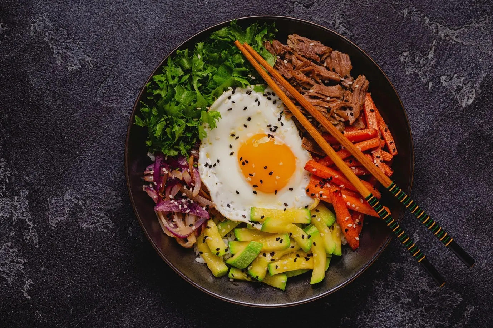
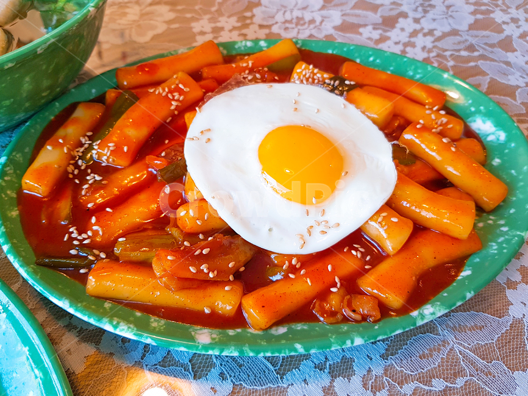
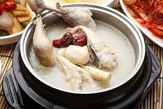
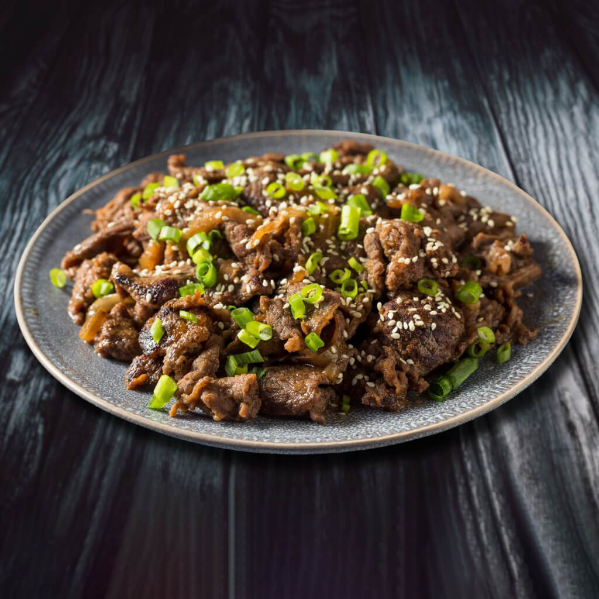

| 사진 | 음식명 | 가격 | 설명 |
|---|---|---|---|
|  | 비빔밥 | 5,000~30,000원 | 여러 채소들과 비빔장, 밥을 섞어 먹음 |
|  | 떡볶이 | 8,000~25,000원 | 고추장 베이스의 양념에 떡과 어묵 및 야채 등을 볶아서 먹음 매운편이며 엽기떡볶이, 신전떡볶이 등 인기 |
|  | 삼계탕 | 16,000~60,000원 | 닭 안에 찹쌀을 넣고 마늘 대추 인삼 등의 재료와 함께 푹 고아서 먹음 들어가는 한방재료가 좋을수록보단 얼마나 잘 푹 고아 삶아내느냐가 맛을 내는 기술 |
|  | 불고기 | 7,000~40,000원 | 여러 채소들 간장베이스 양념장에 고기를 볶아서 먹음 소불고기로 함 |